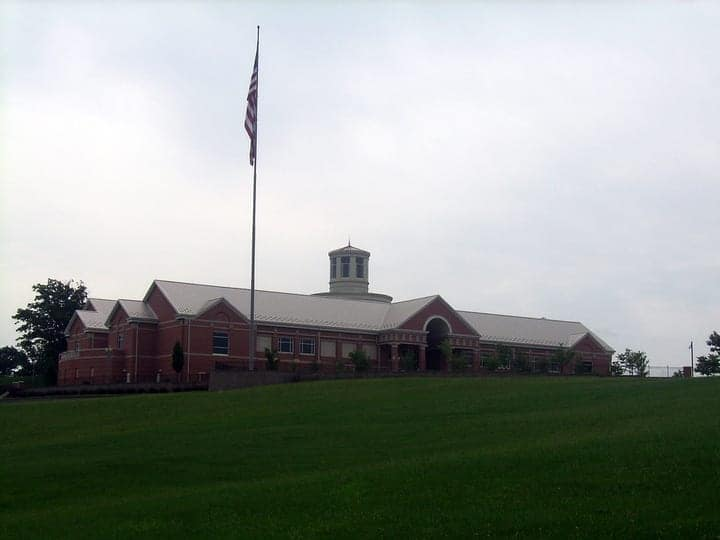
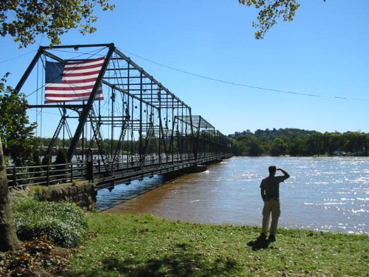
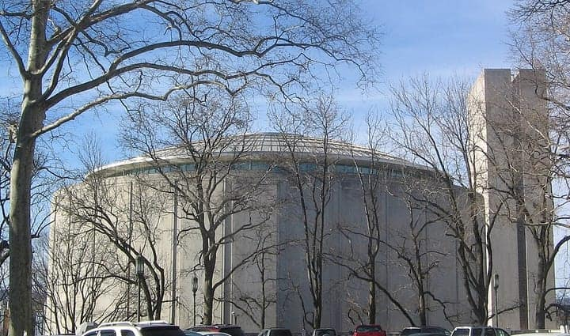

United States
Harrisburg · York · Lancaster
Hershey, Amish country & the road to Gettysburg
171 places · 7 areas · every one sourced, pinned and status-checked · last checked · 1 closed, kept for the record. Ordered by tier, then by number of named sources. How we choose
shoofly · whoopie pie · Pennsylvania State Capitol
Start with Raising the Bar Bakery

Start with
Harrisburg · York · Lancaster
Hershey, Amish country & the road to Gettysburg
171 places picked by 88 sources

Harrisburg & the West Shore 30 places · area 1 of 7
Midtown, Camp Hill, Mechanicsburg
Photo: Acroterion · CC BY-SA 4.0 · Wikimedia Commons (resized) 1 Must see within Harrisburg & the West Shore
Pennsylvania State Capitol
Joseph Huston's 1906 Beaux-Arts capitol, its dome modeled on St. Peter's — Theodore Roosevelt called it the handsomest he'd seen. Moravian tile floors by Henry Mercer, Violet Oakley and Edwin Austin Abbey murals; free 30-minute guided tours every half hour on weekdays.
501 N 3rd St, Harrisburg, PA 17120
Recommended by , ,

Photo: Reading Tom · CC BY 2.0 · Flickr (resized) 2 Must see within Harrisburg & the West Shore
National Civil War Museum
Hilltop museum in Reservoir Park that tells the whole war — causes, both armies, the home front and aftermath — evenhandedly, without picking sides; one of the largest Civil War collections in the country.
1 Lincoln Cir, Harrisburg, PA 17103
Recommended by , ,

Photo: Kirkpatrick · CC BY-SA 3.0 · Wikimedia Commons (resized) 3 Must see within Harrisburg & the West Shore
Walnut Street Bridge & City Island
The 1890 'People's Bridge,' a wrought-iron truss now open only to walkers and cyclists, carries you from Riverfront Park across the Susquehanna to City Island — home of the Senators' ballpark, a riverboat, beach and the best skyline view of the Capitol dome.
Walnut St at Front St, Harrisburg, PA 17101
Recommended by , ,
-
4 Must see within Harrisburg & the West Shore
The Millworks
Midtown Harrisburg's 'Art. Food. Music.' hub since 2015, built from the reclaimed timber of the old Stokes Millwork: a farm-to-table restaurant, brewery and rooftop biergarten over two floors of working artist studios. Named to OpenTable's Top 100 Hot Spot Restaurants in America. Order: Farm-to-table plates and house-brewed beer in the rooftop biergarten.
340 Verbeke St, Harrisburg, PA 17102
Recommended by , ,
-
5 Must see within Harrisburg & the West Shore · Coffee & cafés
Little Amps Coffee Roasters
Harrisburg's home-grown roaster (2010, founded by a rock drummer) — Uptown flagship plus downtown State St and Strawberry Square outposts; its barista won a national best-espresso contest. Order: House-roasted espresso (Best Espresso in America contest winner, 2018).
1836 Green St, Harrisburg, PA 17102
Recommended by , ,
-
6 Must see within Harrisburg & the West Shore
Raising the Bar Bakery
Scratch bakery that grew up inside the Broad Street Market and now bakes croissants and breads in Midtown's old Carpets and Draperies building. Order: Seasonal croissants, rustic breads and dessert bars.
1507 N 3rd St, Harrisburg, PA 17102
Recommended by , ,
-
7 Must see within Harrisburg & the West Shore
Isabelle's Southern Cuisine
Kim Ross's Midtown soul-food restaurant cooking her grandmother Isabelle's recipes — Visit PA's pick for Harrisburg Sunday brunch. Order: Isabelle's chicken & waffles, fried fish & grits.
306 Reily St, Harrisburg, PA 17102
Recommended by , ,
-
8 Must see within Harrisburg & the West Shore · Markets
Broad Street Market
Founded in 1860 (it fed Union soldiers at Camp Curtin) and among the oldest continuously operating market houses in the US; on the National Register since 1974. Midtown Harrisburg's anchor, run by the non-profit Broad Street Market Alliance. Thu–Sat only. Order: Pennsylvania Dutch stands alongside the city's international food counters — eat your way through both brick and stone market houses.
1233 N 3rd St, Harrisburg, PA 17102
Recommended by ,
-
9 Must see within Harrisburg & the West Shore · Italian & pizza
Pizza Boy Brewing Co.
West Shore brewery grown out of Al's of Hampden pizza shop — industrial setting, but routinely named the region's best beer, with around 100 drafts. Order: Barrel-aged and one-off beers from 100-ish taps, with pies from Al's of Hampden.
2240 Millennium Way, Enola, PA 17025
Recommended by ,
-
10 Must see within Harrisburg & the West Shore
The Jackson House
Midtown burger counter making what FOX43 calls arguably the city's best burger and cheesesteak since 1982 — a Visit Hershey & Harrisburg 'uniquely Harrisburg' pick. Order: Charbroiled half-pound burger with house Jackson Sauce; cheesesteaks.
1004 N 6th St, Harrisburg, PA 17102
Recommended by ,

Photo: Ruhrfisch · CC BY-SA 4.0 · Wikimedia Commons (resized) 11 Worth the detour within Harrisburg & the West Shore
State Museum of Pennsylvania
The Commonwealth's own museum beside the Capitol, run by the PA Historical and Museum Commission: four floors from mastodons and Native Pennsylvania to Peter Rothermel's huge 'Battle of Gettysburg: Pickett's Charge' painting, plus a 70-seat digital planetarium.
300 North St, Harrisburg, PA 17120
Recommended by , ,
-
12 Worth the detour within Harrisburg & the West Shore
Fort Hunter Mansion and Park
A Federal-style stone mansion (1814) on the site of a French and Indian War fort, in a 40-acre Dauphin County riverside park with a covered bridge, gardens and a tavern museum six miles up the Susquehanna from downtown.
5300 N Front St, Harrisburg, PA 17110
Recommended by , ,
-
13 Worth the detour within Harrisburg & the West Shore
Rockville Bridge
The longest stone-masonry arch railroad viaduct ever built: 48 arches and 3,820 feet across the Susquehanna, completed by the Pennsylvania Railroad in 1902 and still carrying Norfolk Southern freights and Amtrak's Pennsylvanian. Best seen from the Marysville or Fort Hunter river banks.
Susquehanna River between Rockville and Marysville, PA
Recommended by , ,
-
14 Worth the detour within Harrisburg & the West Shore
John Harris–Simon Cameron Mansion
Built in 1766 by city founder John Harris Jr. and later the home of Lincoln's first Secretary of War, Simon Cameron — one of Harrisburg's oldest buildings and a National Historic Landmark, run as a museum by the Historical Society of Dauphin County.
219 S Front St, Harrisburg, PA 17104
Recommended by , ,
-
15 Worth the detour within Harrisburg & the West Shore
Dauphin Narrows Statue of Liberty
A 25-foot Lady Liberty on a river piling — a 1986 patriotic prank, blown down in 1992 and replaced in metal by helicopter in 1997.
Susquehanna River, Dauphin Narrows (visible from US-22/322), Dauphin, PA 17018
Recommended by , ,
-
16 Worth the detour within Harrisburg & the West Shore
Pennsylvania Farm Show Complex
24-acre home of the nation's largest indoor agricultural exposition each January — half a million visitors, a butter sculpture and 20,000 Dairymen's milkshakes a day.
2300 N Cameron St, Harrisburg, PA 17110
Recommended by , ,
-
17 Worth the detour within Harrisburg & the West Shore · Italian & pizza
Alvaro Bread and Pastry Shoppe
Midtown Italian bakery run since 2005 by Sal and Lina Alvaro, immigrants from Italy — FOX43's pick for the area's best Italian food. Order: Cannoli, sfogliatelle, Italian breads and lunch plates.
236 Peffer St, Harrisburg, PA 17102
Recommended by , ,
-
18 Worth the detour within Harrisburg & the West Shore
Susquehanna Art Museum
Midtown's contemporary art museum, opened in its purpose-built home (wrapped around a 1916 bank vault) in 2015, with rotating exhibitions — steps from Broad Street Market.
1401 N 3rd St, Harrisburg, PA 17102
Recommended by ,
-
19 Worth the detour within Harrisburg & the West Shore
Whitaker Center for Science and the Arts
Downtown Harrisburg's science center, Sunoco Performance Theater and digital cinema under one roof — the region's go-to hands-on museum for families.
222 Market St, Harrisburg, PA 17101
Recommended by ,
-
20 Worth the detour within Harrisburg & the West Shore
Riverfront Park & Holocaust Memorial
Harrisburg's 1912 City Beautiful riverfront — miles of Susquehanna promenade, steps and gardens along Front Street — named one of America's Great Public Spaces by the American Planning Association; the Holocaust Memorial for the Commonwealth (1994) stands at Sayford Street.
Front St & Sayford St, Harrisburg, PA 17102
Recommended by ,
-
21 Worth the detour within Harrisburg & the West Shore
1700 Degrees Steakhouse
Downtown steakhouse in the Hilton Harrisburg, named the best steakhouse in Pennsylvania by Mashed (2025), weighing reviews, accolades and recommendations. Order: New York strip and truffle-lobster mac 'n' cheese.
1 N 2nd St (Hilton Harrisburg), Harrisburg, PA 17101
Recommended by ,
-
22 Worth the detour within Harrisburg & the West Shore
Ever Grain Brewing Co.
Camp Hill warehouse brewery (2016) known for hazy IPAs and stouts, board games and a window into the kitchen next door. Order: Joose juicy IPA and Dark Necessity imperial stout.
4444 Carlisle Pike, Camp Hill, PA 17011
Recommended by ,
-
23 Worth the detour within Harrisburg & the West Shore · Coffee & cafés
Elementary Coffee Co.
Andrea Grove-Musselman's roaster, born at the Broad Street Market in 2014, now a café in a renovated Capitol-district building (and back at the market after the 2023 fire). Order: Small-batch roasts sweetened only with natural sweeteners and spices.
256 North St, Harrisburg, PA 17101
Recommended by ,
-
24 Worth the detour within Harrisburg & the West Shore
Note Bistro & Wine Bar
Midtown neighbourhood bistro in a repurposed 1910 Victorian home, with sidewalk tables on Second Street. Order: European-inspired bistro plates and an Old World wine list.
1530 N 2nd St, Harrisburg, PA 17102
Recommended by ,

Hershey & Derry Township 20 places · area 2 of 7
Hummelstown, Middletown, Palmyra

Carlisle & the Cumberland Valley 14 places · area 3 of 7
Boiling Springs, Shippensburg

York & York County 23 places · area 4 of 7
Hanover, the factory-tour trail

Lancaster city 29 places · area 5 of 7
Central Market, Penn Square, the Gallery Row

Lancaster County Amish country 34 places · area 6 of 7
Intercourse, Bird-in-Hand, Strasburg, Ephrata, Lititz

Gettysburg & Adams County 21 places · area 7 of 7
the day-trip edge
How we choose
Every place is recommended by named sources (review-aggregator star ratings never count as the recommender), pinned to its door from a published coordinate, and status-checked. Closed places stay, flagged, so you know they’re gone.
- Must see
- The places to plan a visit around — graded within each area, not across the city.
- Worth the detour
- Strong picks, worth going out of your way for.
- Deep cut
- For the curious: smaller, odder, more local.
Within each area, places are ordered by tier, then by number of named sources — never by popularity. We don’t add ratings, prices or opening hours of our own. Any quoted in a write-up are the source’s, dated.
Follow changes — an RSS feed of every closure and status check in this guide, for any feed reader.
77 sights and 94 places to eat across Harrisburg and the West Shore, Hershey, Carlisle, York, Lancaster and the Amish country of Lancaster County, with Gettysburg as the day-trip edge, each traceable to the source that named it. The food canon is Pennsylvania Dutch: shoofly pie, whoopie pies, square-noodle chicken pot pie, chow-chow, scrapple, Lititz soft pretzels, the York–Hanover snack belt, Hershey chocolate and the country’s oldest farmers’ markets.
Take Harrisburg · York · Lancaster with you
Every place, its sources, the Guidebook and the photos at a small size. Map tiles are not saved: offline, the map shows our own pin schematic and every place stays listed.